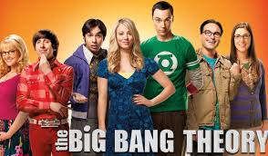

<!DOCTYPE html>
<html>

<head>
<title>Series de televisión</title>
<meta charset = 'utf-8'>

</head>
<link rel= 'stylesheet' type='text/css' href='../css/estilos.css'>
</html>

<h1 style = 'text-align:center;color:white;'> Curiosidades</h1><center>
<div align="center"></div>


<h3>Perdidos</h3>
<h5 align="left">El superéxito televisivo Perdidos tuvo un inicio que pocos conocen. La idea era partir de algo similar a la película Náufrago, protagonizada por Tom Hanks. De hecho, el primer nombre que se barajó para la serie fue Survivor (Superviviente). El productor de televisión Anthony Spinner denunció por plagio a ABC, pues sostenía que 32 años antes del estreno de Perdidos había entregado a la cadena un guión con similitudes</h5>
<div align="center"></div>

<h3>Breaking Bad</h3>
<h5 align="left">La serie protagonizada por Walter White dejó objetos míticos e inolvidables. Una vez acabó la serie se subastaron y se logró sacar cifras de récord. La campanilla de Héctor Salamanca se llegó a vender por 26.675 dólares, los calzoncillos de Walt por 10.000 dólares y el famoso oso rosa por 20.000. En total se consiguió sacar cerca de un millón de dólares con esta masiva subasta de objetos de la serie.</h5>
<div align="center"></div>

<h3>The Big Bang Theory</h3>
<h5 align="left">Durante la serie Leonard toca el cello, Sheldon el theremín y Amy el arpa. Lejos de ser meras curiosidades, los tres actores tocan instrumentos en la vida real, por lo que de este modo pudieron traspasar parte de su talento real a la ficción por la que han saltado a la fama. En esta misma línea, Jim Parsons (Sheldon) ha reconocido no haber visto nunca ni un episodio de la serie Star Trek, que su personaje adora.</h5>
<div align="center"></div>


<ul>
<li><a href='../index.html'>Inicio</a></li>
</ul>
<ul>
<li><a href='historia.html'>Historia</a></li>
</ul>
<ul>
<li><a href='series.html'>Series</a></li>
</ul>

<body>


